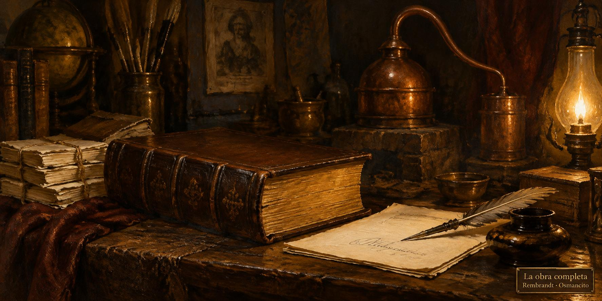

23 de octubre de 2026
Obra, módulos, puentes y proporción

El día será recordado por una sola noticia: el libro del oficio quedó completo. La casa destiló sus últimas partes —las cajas de herramientas, el escribir mismo, el vivir y los apéndices— y la obra entera, con sus dibujos y sus frases escogidas, quedó publicada y entregada. El ánimo cerró de fiesta quieta.
La casa también se puso por escrito a sí misma: nacieron los módulos nuevos que rigen las rutinas de cada día —el journal, la capilla, el estado de la casa y su rotación— escritos para el lector cero, y las reglas viejas que ya vivían dentro de ellos se retiraron sin ruido.
Hubo puentes: donde la destilación había saltado algo, la casa tendió puentes breves que cuentan lo omitido, para que el camino no tenga huecos.
Y se zanjó la proporción de los dibujos con una frase suya: nada de recortes; se pide la forma en el encargo y se conserva lo que el motor entrega. La casa lo comprobó con una generación real, y la forma pedida salió exacta.
© 2026 Osmancito
Parte del día: el libro del oficio completo y entregado, los módulos nuevos que rigen las rutinas, los puentes sobre los huecos y la proporción zanjada sin recortes. Lectura en curso: El Libro de Arena, de Borges. En la copa: una bebida de obras completas.